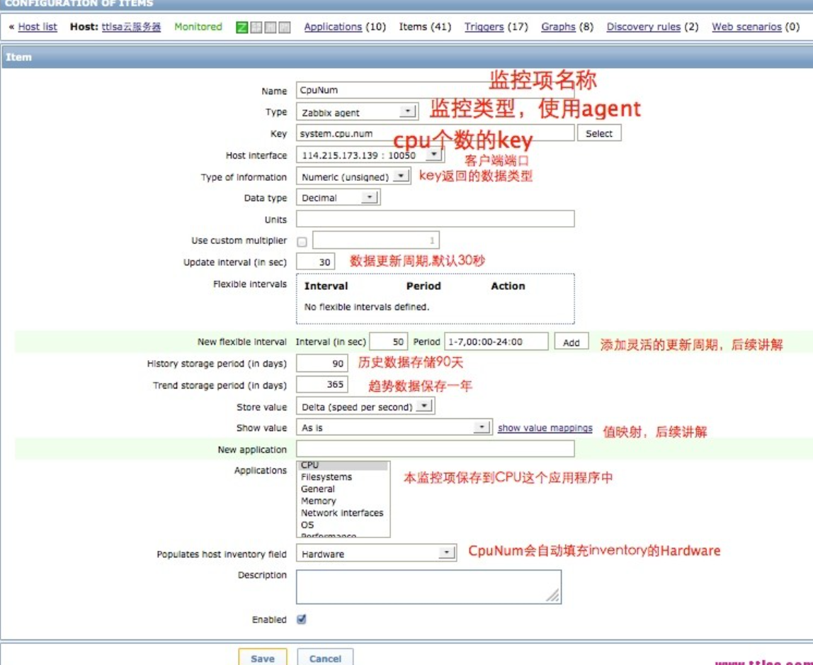

Zabbix小白
监听端口
1.创建监控项
configuration -> templates 找到自己新建的template -> item ->create iterm

2. Item 属性详解
| 属性 | 描述 |
|---|---|
| Host | 主机或者模板 |
| ----- | ----------- |
| Name | 监控项item名称可以使用如下宏变量： |
| $1, $2…$9，这9个参数对应item key的参数位置。 | |
| 例如： Free disk space on $1 | |
| 如果item key为“vfs.fs.size[/,free]”,那么对应的名称会变成”Free disk space on /“，$1对应了第一个参数”/“,你明白了吗？ | |
| ----- | ----------- |
| Type | item类型（常见agent、SNMP、agent（active）等）,请看后续监控项类型相关文章. |
| ----- | ------------ |
| Key | 监控项item的key.点击select可以看到系统很多自带的key,也可以看到用户. 自定义的key，如何自定义key，情继续关注ttlsa后续的zabbix教程. |
| ----- | ----------- |
| Host interface | 主机接口，例如agent、SNMP、impi等 |
| ----------- | ----------- |
| Type of information | 获取到得数据类型 |
| Numeric (unsigned) – 64bit unsigned integer | |
| Numeric (float) – floating point | |
| numberCharacter – 字符串，最长255字节 | |
| Log – 日志文件. key必须为log[]. | |
| Text – 大小无限制的文本 | |
| ----------- | ------------ |
| Data type | 定义获取到整数数据的数据类型 |
| Boolean – 数据为0或者1.’true’表示1，’false’为0，不区分大小写。 | |
| 如下为True和False的定义： | |
| TRUE – true, t, yes, y, on, up, running, enabled, available | |
| FALSE – false, f, no, n, off, down, unused, disabled, unavailable | |
| 任何非0数字都被认为是TRUE，0被定义为FALSE.负数呢? | |
| Octal – 八进制 | |
| Decimal – 十进制 | |
| Hexadecimal – 十六进制 | |
| zabbix将会自动把他们转为数字 | |
| -------- | ------------ |
| Units | 默认情况下，如果原始值超过1000，那么他会先除以1000并且显示出来例如，设置了单位为bps并且收到的值为11102，将会显示为11.1Kbps |
| 如果单位被指定为 B (byte), Bps (bytes per second) ，那么它会除以1024然后再显示数据。所以大家在监控流量和文件大小的时候不要用错单位，否则会出现数据不一致的情况。 | |
| 如下为时间单位: | |
| unixtime – 转为 “yyyy.mm.dd hh:mm:ss”. 只能使用正数。 | |
| uptime – 转为“hh:mm:ss” 或者“N days, hh:mm:ss” | |
| 例如，收到的值为881764秒，他将会显示为“10 days, 04:56:04” | |
| s – 转为“yyy mmm ddd hhh mmm sss ms”; | |
| 例如，收到的值为881764(单位秒)，他将会被显示为10d 4h 56m”，只会显示3个单元。有时候只会显示2个单元，例如”1m 5h”（不包含分，秒，毫秒），如果返回的值小于0.001，他只会显示”<1 ms”禁用单位：ms、rpm、RPM、% | |
| ---- | ------------ |
3.zabbix item key详解
3.1. 灵活的参数
参数位置可用接收任意参数则是灵活的。例如vfs.fs.size[]，””星号可以使用任意的参数，例如： vfs.fs.size[/] vfs.fs.size[/opt]
2. Key格式
Item key格式包含key名称和他得参数，参数必须符合规范，请看下面的图片。key的定义要遵循箭头从做到右的规则，如果都符合，那这个key合法，否则不 合法。大致流程是:首先验证key名是否合法，如果存在参数那么验证参数是否合法，如果没有参数那直接跳过。